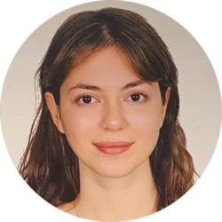

|  | Şebnem BoysanBioengineer I am a bioengineering and genetics graduate from Istanbul Bilgi University, currently completing my Master's degree in Molecular Biotechnology and Genetics in Istanbul University. I have a passion for research and enjoy working in laboratory settings.My interests include using programming tools such as Python to enhance my abilities and explore new areas. I am highly motivated to improve myself and expand my skill set in a variety of different areas. Overall, I am a highly motivated and dedicated individual who is committed to continuous learning and self-improvement. |
İstanbul Bilgi University (2017-2021)
İstanbul University (2021-2023)
| Dates | Company | Work | Responsibilities |
|---|---|---|---|
| 06/2019 - 07/2019 | Turkish DO&CO | Microbiology Laboratory Intern | During my internship I was responsible from preparing,classifying and labeling samples, preparing agar plates, conducting laboratory tests, analyzing and reporting the results and sterilizing laboratory equipments. |
| 11/2017-11/2021 | Bosphorus Movie Festival | Guest Coordinator | I have worked in guest coordination department of 4th,5th,6th and 8th Bosphorus Film Festival. I have introduced Istanbul to film crews participating in the festival and accompanied them during the festival events. |
| Title | Responsibilities |
|---|---|
| Concordia France International Voluntary Working Camp | I have joined international voluntary project of Concordia called "Chantiers Internationaux" in an archeological site for 1 month in Paris. |
| BOSH – Metropol Exchange between Istanbul and Berlin | I have joined an exchange that is sponsored by BOSH between Beyoğlu Anadolu High School and Neukölln High School to compare and exchange cultures between two metropol cities. |
| Microsof Office | ⭐️⭐️⭐️⭐️ |
| Python | ⭐️⭐️⭐️ |
| Matlab | ⭐️⭐️ |